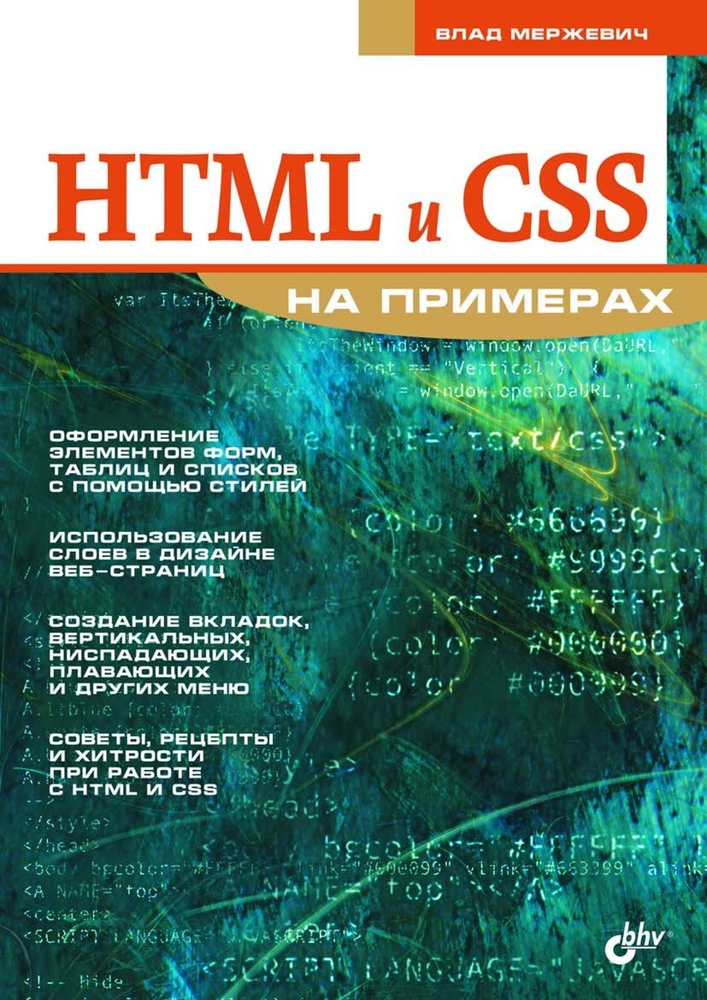

ГБПОУ «Пермский политехнический колледж имени Н.Г. Славянова»
Выравнивание элементов
Карта сайта
Цветовая схема
Кроссворд
Тест
Глоссарий
Валидность
Разработчик
Главная
1. Выравнивание элементов
2. Выравнивание рисунков по горизонтали
2.1 Выравнивание рисунков по горизонтали (продолжение1)
2.2 Выравнивание рисунков по горизонтали (продолжение2)
2.3 Выравнивание рисунков по горизонтали (продолжение3)
2.4 Выравнивание рисунков по горизонтали (продолжение4)
3. Центрирование по вертикали
3.1 Центрирование по вертикали (продолжение1)
3.2 Центрирование по вертикали (продолжение2)
3.3 Центрирование по вертикали (продолжение3)
4. Выравнивание слоя по центру
5. Использование отступов

© 2025 Мой сайт
8 800 535 35 35
karina228eyyyy@gmail.com